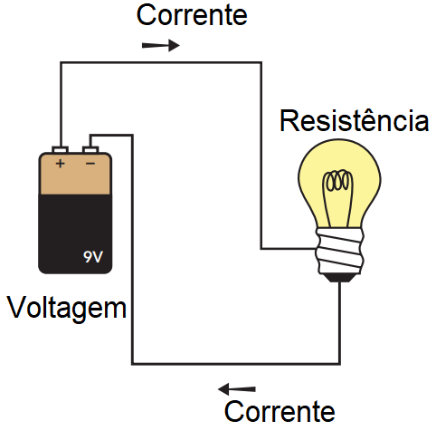
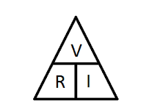

Introdução
A Lei de Ohm foi formulada pelo físico alemão Georg Simon Ohm em 1827. Durante o
século XIX, a eletricidade ainda era um campo de estudo em desenvolvimento, e muitos fenômenos elétricos eram
pouco compreendidos. Ohm realizou uma série de experimentos para entender a relação entre tensão, corrente e
resistência, culminando na famosa equação que leva seu nome.
Inicialmente, seu trabalho não foi bem recebido pela comunidade científica. No
entanto, com o tempo, suas descobertas foram reconhecidas como fundamentais para o avanço da eletricidade e da
eletrônica. Hoje, a Lei de Ohm é amplamente utilizada em circuitos elétricos e sistemas eletrônicos ao redor do
mundo.
A Lei de Ohm descreve a relação entre tensão (V), corrente (I) e resistência (R) em um circuito elétrico. A
fórmula básica é:
V = R × I
Onde:
- V é a tensão (voltagem), medida em volts (V).
- I é a corrente elétrica, medida em amperes (A).
- R é a resistência, medida em ohms (Ω).
🔍 Como funciona?
A resistência de um componente determina quanta corrente pode passar por ele para uma determinada tensão. Quanto
maior a resistência, menor a corrente.
⚡ Aplicações da Lei de Ohm

- Dimensionamento de circuitos elétricos: Utilizada para calcular os valores corretos de
resistência, tensão e corrente em circuitos eletrônicos.
- Proteção de dispositivos elétricos: Ajuda a determinar os limites de corrente para evitar
danos em componentes eletrônicos.
- Projetos de instalações elétricas: Essencial para planejar a fiação elétrica em
residências e indústrias, garantindo segurança e eficiência.
- Análise de falhas: Facilita a identificação de problemas em circuitos, como curtos-circuitos
e quedas de tensão.
- Fontes de alimentação: Usada para projetar e regular a distribuição de energia elétrica em
diferentes dispositivos.
Representação Gráfica

O triângulo da Lei de Ohm pode ser usado para lembrar as fórmulas:
V sobre I × R
👀 Curiosidades sobre Georg Simon Ohm e sua Descoberta
- Georg Simon Ohm era professor de matemática e física e conduziu seus experimentos com equipamentos
rudimentares para a época.
- Em 1841, recebeu a Medalha Copley da Royal Society, uma das mais importantes honrarias científicas.
- O símbolo da resistência elétrica, o ohm (Ω), foi nomeado em sua homenagem.
- Hoje, a Lei de Ohm é a base para o funcionamento de diversos dispositivos, como computadores, celulares e
redes elétricas.